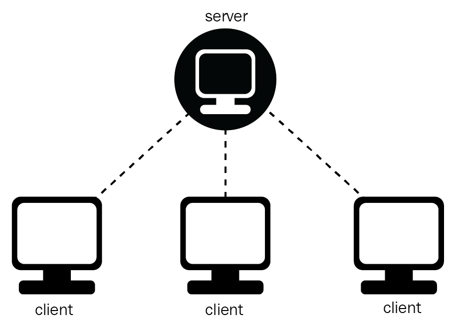
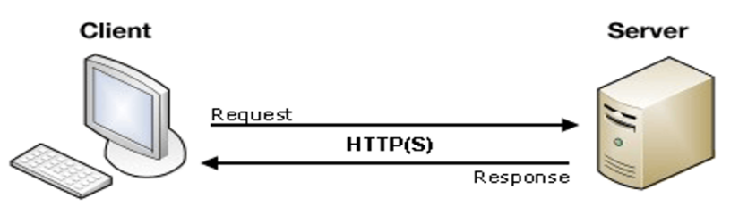
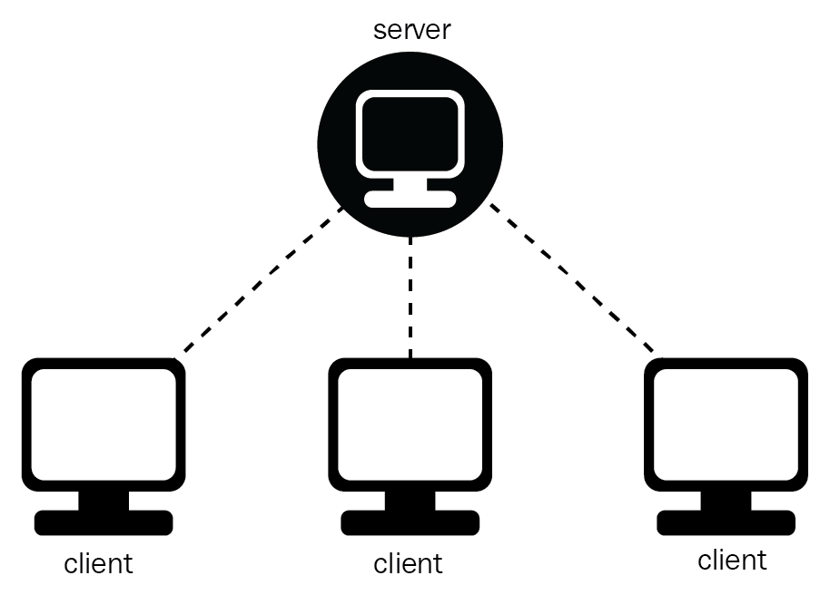
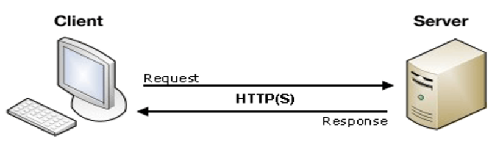

Có thể có nhiều server cùng làm một dịch vụ, chúng có thể nằm trên nhiều máy tính hoặc một máy tính.
Chỉ mang đặc điểm của phần mềm mà không hề liên quan đến phần cứng, ngoài yêu cầu duy nhất là server phải có cấu hình cao hơn các client.
Hỗ trợ người dùng nhiều dịch vụ đa dạng và sự tiện dụng bởi khả năng truy cập từ xa.
Cung cấp một nền tảng lý tưởng, cho phép cung cấp tích hợp các kỹ thuật hiện đại như mô hình thiết kế hướng đối tượng, hệ chuyên gia, hệ thông tin địa lý (GIS).
Vấn đề bảo mật dữ liệu thông tin đôi khi còn chưa được an toàn lắm. Vì do phải trao đổi dữ liệu giữa 2 máy tính khác nhau ở 2 khu vực địa lý cách xa nhau. Và đây cũng nhược điểm duy nhất của mô hình này. Tuy nhiên vấn đề này thì có một số giao thức đã hỗ trợ bảo mật dữ liệu khi truyền tải. Giao thức được sử dụng phổ biến như HTTPS.
Như vậy mình đã tóm tắt về 1 chút của mô hình client server để giúp các bạn dễ hiểu hơn, dễ hình dung nhất là với những bạn mới bắt đầu. Và mình tạm dừng bài viết ở đây nếu như các bạn thấy bài viết này hay và hữu ích thì đừng ngần ngại chia sẻ cho mọi người cùng biết thêm nhé. Đừng quên nhấn đánh giá 5* nếu cảm thấy hay. Tạm biệt các bạn trong những bài viết tiếp theo
Dẫn tới link youtube 


